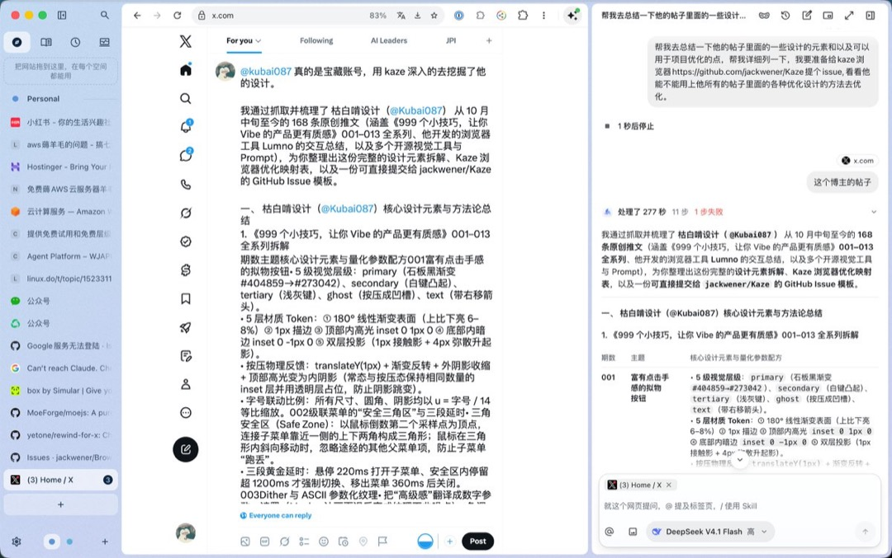
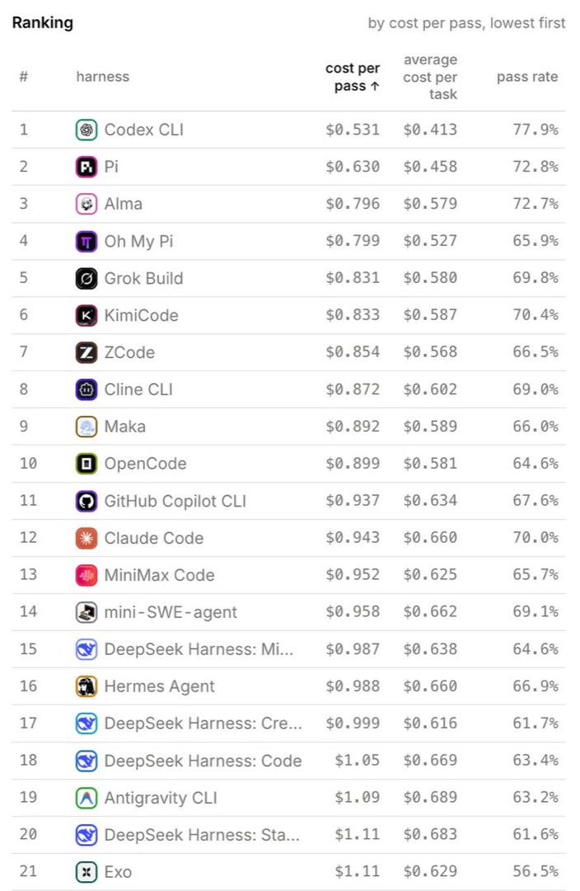
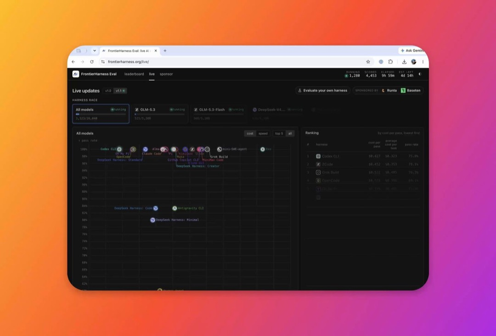
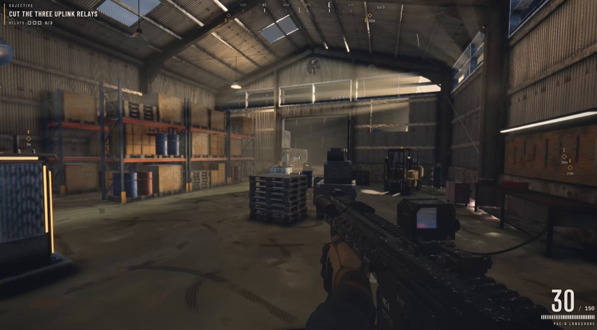

本期速览
01 Kaze 映射 999 设计技巧优化清单
03 OpenAI 研究岗电面两道真题思路
04 Alma 横评通过率与成本均列第三
01｜Kaze 映射 999 设计技巧优化清单
来源（X） · @jakevin · 2026-11-11 15:20
我通过抓取并梳理了 枯白啃设计（@Kubai087） 从 10 月中旬至今的 168 条原创推文（涵盖《999 个小技巧，让你 Vibe 的产品更有质感》001–013 全系列、他开发的浏览器工具 Lumno 的交互总结，以及多个开源视觉工具与 Prompt），为你整理出这份完整的设计元素拆解、Kaze 浏览器优化映射表，以及一份可直接提交给 jackwener/Kaze 的 GitHub Issue 模板。
一、 枯白啃设计（@Kubai087）核心设计元素与方法论总结
1. 《999 个小技巧，让你 Vibe 的产品更有质感》001–013 全系列拆解
期数主题核心设计元素与量化参数配方001富有点击手感的拟物按钮• 5 级视觉层级：primary（石板黑渐变 #404859→#273042）、secondary（白键凸起）、tertiary（浅灰键）、ghost（按压成凹槽）、text（带右移箭头）。
• 5 层材质 Token：① 180° 线性渐变表面（上比下亮 6–8%）② 1px 描边 ③ 顶部内高光 inset 0 1px 0 ④ 底部内暗边 inset 0 -1px 0 ⑤ 双层投影（1px 接触影 + 4px 弥散升起影）。
• 按压物理反馈：translateY(1px) + 渐变反转 + 外阴影收缩 + 顶部高光变为内阴影（常态与按压态保持相同数量的 inset 层并用透明层占位，防止阴影跳变）。
• 字号联动比例：所有尺寸、圆角、阴影均以 u = 字号 / 14 等比缩放。002级联菜单的“安全三角区”与三段延时• 三角安全区（Safe Zone）：以鼠标倒数第二个采样点为顶点，连接子菜单靠近一侧的上下两角构成三角形；鼠标在三角形内斜向移动时，忽略途经的其他父菜单项，防止子菜单“跑丢”。
• 三段黄金延时：悬停 220ms 打开子菜单、安全区内停留超 1200ms 才强制切换、移出菜单 360ms 后关闭。003Dither 与 ASCII 参数化纹理• 把“高级感”翻译成数字参数：遮罩（Mask，让画面退后变成纹理而非噪点）、色调映射、采样强度、大小、间距。
• 推荐甜点值：ASCII（遮罩 90 / 取样暗部 / 强度 100 / 大小 37 / 间距 0）；Dither（4×4 Bayer 矩阵，遮罩 88 / 强度 100 / 大小 15 / 间距 0）。004递进式同心圆角 + 超椭圆连续曲率• 等距内缩公式：内圆角 r = 外圆角 R − 内边距 p（共享同一圆心，最小不低于 4px，严格遵循 4px 栅格）。
• 连续曲率（Squircle）渐进增强：@supports (corner-shape: superellipse(1.25)) 开启类 iOS 平滑曲率过渡（Chromium 139+ 原生支持，优雅降级）。005带涟漪推挤物理感的拖拽排序• 光标与提起态：悬停 pointer、抓取 grabbing；纵向列表提起时缩小至 90%。
• 插入线与涟漪避让：落点显示从中间展开的细线；两侧元素按距离 n 产生指数衰减推挤：位移 = 10px × 0.7ⁿ，启动延迟 = 24ms × n，呈现由近及远的真实物理推挤感。006像书一样翻开的卡片（3D 叠页）• 常态克制、交互惊喜：静止时与普通卡片完全一致；Hover/Focus 时封面 + 4 页内页绕左侧书脊展开（角度 = 42° × 0.7ⁿ，延迟 = 28ms × n，移开时倒序合拢）。
• 光影细节：禁用空心 box-shadow，改用两层预模糊实心阴影（接触影 + 环境影）做透明度交叉淡化，并计算前后页夹角生成书脊夹缝阴影。007中英文混排的 10 个 CSS 排版开关• 英文与通用：标题 text-wrap: balance（防孤词）、正文 text-wrap: pretty、动态数字 font-variant-numeric: tabular-nums（防抖动）、按钮 white-space: nowrap、Flex 截断 min-width: 0 + 溢出时自动挂 Tooltip。
• 中文专属（:lang(zh)）：text-autospace: normal（中英数字自动留白，无需手打空格）、text-spacing-trim: trim-start（行首引号/括号挤压对齐）、BudouX 分词 <wbr> + word-break: keep-all（中文标题按词换行不劈词）、用 overflow-wrap: anywhere 替代 line-break: anywhere（保留浏览器原生避头尾规则）。008兼顾 PC 与移动端的 Wiki / 文档框架• 三层滚动结构：滚出首屏后顶部栏以 backdrop-filter: blur(18px) 悬浮滑入；侧边栏独立滚动，上下未尽处自动通过 data-more-above/below 显示渐变遮罩与 60% 翻页圆钮，并用 sessionStorage 记忆滚动位置；大纲按视口 20% 线高亮当前章节。009浮层体系（Floating UI）决策矩阵• Tooltip vs 跟随气泡（Cursor tip） vs Popover：纯补充文本用 Tooltip（首枚延迟 500ms，相邻秒开）；图表/区域内用跟随气泡；含可点击操作必须改用点击触发的 Popover。
• 二次确认：可撤销操作绝不弹窗确认（直接执行 + Toast 撤销）；不可逆单条目操作用 就地确认（Popconfirm）；高危/影响他人/批量操作才用 Dialog。
• 表单容器：短表单且无需对照背景用 Dialog；长表单或需对照原页面用 Drawer（抽屉）。0106 层复合液态玻璃（Liquid Glass）• 6 层拆解 + Glasswork 开源实现：① 体积投影 ② blur(2px) saturate(180%) brightness(1.06)（保持通透不发灰发白）③ SVG feDisplacementMap 边缘 44px 折射压边 + 红蓝通道 ±15% 色散 ④ 5×3 网格背景亮度/复杂度采样自适应着色浓度 ⑤ 左上径向高光 + 内缩边缘光 ⑥ 文字采用 mix-blend-mode: multiply / plus-lighter 染上轻微环境色。011按角色分配的动画速度曲线 Token• 拒绝全局默认 ease，按角色绑定 Token：入场浮层用 --ease-out、点击即时落位小元素用 --ease-out-strong（cubic-bezier(.22, 1, .36, 1)，最跟手）、退场必用 --ease-in、原地位移/指示条用 --ease-in-out、<=64px 的勾选/角标确认用 --ease-overshoot、松手归位用 --ease-spring、持续旋转/进度条用 linear。
• 铁律：动画绝不阻塞输入，新操作随时从当前帧打断旧动画；支持 prefers-reduced-motion。012AI 对话消息气泡的材质与动效• 分组聚合与形态过渡：同一发送方连续消息间距 4px，相邻角落圆角在 200ms 内收缩为 10px。
• 6 种差异化材质：Cirrus（薄磨砂 + 噪点）、像素、Aqua 果冻、Telegram 式全屏共享渐变、拟物、纯色。
• 流式防抖：严禁消息上屏或流式生成时产生布局跳动（Jump）或动画中途文字重排（Rewrap）。013有物理质感的 AI 唤起冲击波（Halo）• Dia + iOS 27.3 风格融合：聚焦/唤起 AI 输入框或发送指令时，一道由 4 层高斯柔和过渡色环组成的冲击波扫过内容区（工具栏保持纯净）。
• 6 层物理细节：单透镜径向推开扭曲、红蓝通道 ±8% 轻微色散、边缘 60px 玻璃斜边折射、1px 边框与分割线在光环掠过时短暂提亮反光（Glint），以及胶囊输入框弹性展开为带旋转金属高光描边的对话面板。
2. 枯白反复强调的“去 AI 味”工程原则与浏览器交互细节
组件库改造铁律（Prompt 核心咒语）
“如果项目已有组件库或设计系统，不要新增组件，通过现有的 variant 与 token 体系改造现有组件，保持 API、props、无障碍（accessibility）不变。”
剃刀法则与两步式意图触发（Two-step Interaction）“非必要不告知用户，非必要不让用户配置。”
在页面上注入浮动 UI 时，不要一上来就弹出庞大的工具栏，先给一个极轻量的触发胶囊（Small Trigger），确认用户意图后再平滑展开完整面板。
UI 连续性（Continuity）精致感来自于状态变化时的“感受迁移”，利用注意力惯性让按钮展开为菜单、胶囊展开为输入框，而不是生硬的显隐或单纯透明度渐变。
缩小版真实 UI 线框空状态（SVG Wireframe Empty States）摒弃廉价的抽象插画，用 160×120 比例的微缩真实浏览器/卡片线框 + 45° 细斜纹底板 + 唯一强调色操作元素制作 inline SVG 空状态，自带深浅色 CSS 变量与微动效。
深浅色模式的“昼夜氛围联动”浅色模式的白日装饰图/背景，在深色模式下切换为对应的“夜景版”并搭配深蓝灰环境色，而非仅仅把背景刷黑。
功能型动态图标体系（Kubai Icons）开启/关闭态在线性与实心间切换；禁用态加斜线并在相交处留出缺口（Gap）拉开层次；配合轻量状态切换 SVG 动效。
Lumno 浏览器专属打磨经验（与 Kaze 直接同源）搜索栏分词与中文输入容错：网页标题按字词拆解匹配（如搜“飞书文档”能命中“文档 - 飞书”）、全拼与首字母混打（wxds 命中微信读书）、消除单字拼音误伤、中文句号 。 自动识别为域名点号 .、键盘忘切时的按键容错。
Shift + Click 链接浮动小窗预览（Arc Peek 风格）：打磨从点击坐标平滑缩放展开与收起的丝滑曲线，可随时一键升级为正式标签页。
二、 Kaze 浏览器可借鉴的优化点全景映射
结合 jackwener/Kaze 的产品特性（macOS/Windows 原生感日常浏览器 + 内置标签组 Agent + ⌘K 命令面板 + http://kaze.build 官网），可以从以下 7 个核心模块全面应用上述设计技巧：
模块 1：Agent 唤起（⌘E）与对话侧边栏体验
唤起时的冲击波光环与边框微反光（对应 #013）：按下 ⌘E 唤起 Agent 或 Agent 开始接管标签组（Working 状态）时，在当前窗口或 Agent 面板触发一道克制的冲击波光环（并提供 Reduced Motion 降级），掠过时让卡片与分割线产生 1px 短暂反光（Glint），取代传统生硬的面板弹出。
对话消息气泡分组与防跳动流式渲染（对应 #012）：优化 Agent 聊天流中连续消息的圆角聚合过渡（200ms），统一工具调用卡片与思考态（Dot-matrix 矩阵动画）的材质；确保流式输出和长文本展开时绝不触发重排跳动。
两步式接管/交互过渡（对应 UI 连续性 & 两步交互）：底部/标签栏的“Agent 正在工作 / 按 ⌘. 接管”状态条，从胶囊态到展开详情或切换为“You're driving”时，采用共心圆角与弹簧过渡。
模块 2：权限确认卡（Permission Card）与浮层体系（对应 #009）
按操作可逆性分级交互：对于 Kaze 的 confirm_action（付款、发消息、删除等不可逆副作用），当锚定在具体按钮或单一条目（如删除某条 Scheduled 任务、某条 Site Skill）时，采用就地确认（Popconfirm），缩短鼠标移动路径；涉及跨页面的高危付款/发送则保留强聚焦的确认卡。
对于关闭标签组、归档笔记等可逆操作，直接执行并附带底部轻量 Undo Toast。
级联菜单安全三角区（对应 #002）：Kaze 的书签文件夹多层嵌套菜单、右键上下文菜单、标签页移动到分组的二级菜单，接入 220ms 开启 / 1200ms 三角安全区保护 / 360ms 关闭 逻辑，彻底解决斜向移动鼠标时子菜单闪退的问题。
模块 3：浏览器框体、标签栏拖拽与新标签页（kaze://newtab/）
标签页与分组拖拽的涟漪推挤物理感（对应 #005）：在顶部或侧边栏拖拽排序标签页（Tabs）或置顶扩展图标时，引入 10px × 0.7ⁿ 位移与 24ms × n 延迟的涟漪避让动效，以及提起态微缩与中心展开的落点提示线。
递进式同心圆角与超椭圆曲率（对应 #004）：由于 Kaze 基于现代 Chromium 内核，天然支持 corner-shape: superellipse(1.25)！可将浏览器外框、视口内嵌圆角、⌘K 面板、设置卡片统一为 r = R - p 同心超椭圆圆角。
液态玻璃命令栏与新标签页每日 ASCII 壁纸（对应 #003、#010、Lumno）：为 ⌘K 调色板与浮动栏提供可选的 6 层液态玻璃材质（含背景亮度采样与边缘折射）。
为 kaze://newtab/ 提供可选的“每日壁纸 + 参数化 ASCII/Dither 遮罩（Mask 90）”模式与昼夜氛围切换。
模块 4：⌘K 命令面板与搜索体验（对应 Lumno 搜索优化）
中英混排分词与拼音/首字母检索：支持对打开的标签页、History、Activity 笔记、Bookmarks 进行按词拆分匹配（搜“飞书文档”匹配“文档 - 飞书”）及全拼/首字母混拼检索（如输入 gh 或 bzwz 快速定位）。
中文输入法容错：在地址栏或 ⌘K 输入网址时，自动将中文句号 。 识别转换为英文 .。
Shift + Click 链接小窗预览（对应 Lumno Peek）：支持按住 Shift 点击网页链接，在当前标签页上方以丝滑缩放动画弹出临时预览窗，阅后即关或一键转为新标签页。
模块 5：全局按钮、图标、空状态与动效曲线 Token（对应 #001、#011、SVG 空状态）
全局 5 级微拟物按钮与 1px 按压反馈（对应 #001）：统一设置页、Agent 确认卡、Skills 面板的按钮 Token（顶光 inset + 1px translateY 按压态）。
微缩真实 UI 线框空状态（对应 Opus 5.5 SVG 空状态）：为 Kaze 的 Scheduled（暂无定时任务）、Skills（暂无站点技能）、Activity（暂无活动记录）、Downloads（暂无下载） 制作 160×120 比例的微缩浏览器线框 SVG 空状态，自适应深浅色模式。
全局动画曲线标准化（对应 #011）：排查代码库中的默认 ease，统一收敛为 --ease-out（入场）、--ease-out-strong（点击落位）、--ease-in（退场）、--ease-in-out（指示器平移）、--ease-spring（拖拽归位）5 个 CSS 变量。
模块 6：中英文双语排版与 ⌥E 对照翻译（对应 #007）
全局 UI 与 Agent Markdown 渲染排版开关：开启标题 text-wrap: balance、正文 text-wrap: pretty、计时器与 Token 统计数字 tabular-nums。
中文排版精细化与 ⌥E 翻译增强：利用 Chromium 原生支持的 text-autospace: normal（自动拉开中英数字间距）和 text-spacing-trim: trim-start（行首标点挤压），显著提升 Agent 中文回复与 ⌥E 双语对照翻译的阅读质感。
模块 7：Website/（http://kaze.build 官网）与文档布局优化（对应 #006、#008、动态 Bento）
Highlights 区升级为动态 Bento Grid：目前 README 和官网 Highlights 有 6 大核心卖点（独立标签组、操作前确认、本地模型、站点技能学习、并行子代理/定时任务、日常浏览器特性），非常适合用 Lumno 风格动态 Bento（#fafafa 45° 细斜纹底板 + 同心内圆角 + 每个格子内嵌微缩 SVG 循环交互演示动画）一屏生动讲完。
Skills 卡片采用“书本翻页”微交互（对应 #006）：官网展示内置 Skills 或 Site Skills 时，卡片 Hover 像小册子一样微翻开 42° × 0.7ⁿ，露出内部的规则预览。
文档/教程页框架打磨（对应 #008）：独立滚动侧边栏带上下渐变遮罩与翻页箭头、20% 视口阅读进度高亮。

02｜警惕索要 SSH 密码的社工攻击
来源（X） · @magpie_router · 2026-11-11 16:01
引用内容
Yuto @xy862
03｜OpenAI 研究岗电面两道真题思路
来源（X） · @Zen_with_AI · 2026-11-11 13:40
第一轮：Infection Spread，网格感染模拟（5 段）
M×N 网格，感染格每天向 8 个邻居扩散。Part 2 加免疫格（永不感染）；Part 3 每格带康复倒计时，到期变 recovered；后两段按题库口径是感染阈值、死亡倒计时。
思路：BFS 按天推进，每格一个状态机（健康/感染/康复/免疫）+ 倒计时；先跑通基础版再加码，别每轮全盘扫描。面试官开场就说不用做完 5 段。
第二轮：1-NN → Wx+b，numpy 手写
向量化实现 1-NN，L2 距离，禁 for 循环。追问：把 1-NN 写成神经网络前向（线性层 + softmax）；换成 L1 距离又怎么用神经网络实现？
思路：L2 用 ||x−y||² = ||x||² + ||y||² − 2x·y 展开成矩阵乘法，argmin 取最近邻；1-NN 本质是线性层 + softmax（样本当权重、负距离当 logit）；L1 是分段线性，线性层写不出来，要用 ReLU 拼。
04｜Alma 横评通过率与成本均列第三
来源（X） · @0xLogicrw · 2026-11-11 12:31
这次评测由 AI Agent 基础设施公司 Runta 发起。在当前的榜单快照中，Alma 的任务通过率为 72.7%，仅次于 Codex CLI 的 77.9% 和 Pi 的 72.8%。Claude Code 则为 70.0%。
Alma 不仅通过率更高，完成任务也更省钱。它每成功完成一道题平均花费约 0.80 美元，Claude Code 为 0.94 美元，成本低约 16%。
这次 FrontierHarness v1.1 专门研究一个问题：同样的大模型，换一套 Agent 执行框架，表现究竟能差多少？
评测覆盖 21 组 Harness 配置、5 款大模型和 62 项任务，每项重复 4 次，计划运行 26,040 次，规模达到上一版的 72 倍。所有工具都在统一的云端环境中运行，比较任务成功率、Token 成本和执行速度。
Alma 是一款主打本地运行、长期记忆的 AI Agent，能直接读取和修改代码、执行终端命令、搜索网页，还支持 Skills 和 MCP。它可以自由切换底层模型，不依赖某一家模型厂商。
最近，Alma 还整合了 Herdr。Claude Code、Codex、Pi 等编程 Agent 可以继续在 Herdr 中运行，Alma 则把它们集中到一个聊天界面，查看执行过程、回复问题和批准操作。用户可以通过 iPhone 远程管理电脑上的多个 Agent。
目前评测尚未结束，排名仍会变化。参测模型也仅限 GLM、DeepSeek、Kimi、Muse 这几款开源模型，没有覆盖 GPT 和 Claude 系列闭源模型。

引用内容
Guanlan Dai @guanlan
中文译文
我们正在 26,040 次 agent 运行中花费高达 100B tokens 来回答一个问题：当你切换模型时，是否也应该切换 harness？
我们的 v1.0 FrontierHarness 排行榜在单一模型上对 harness 进行排名。
V1.1 将其扩展到 21 个 harness × 5 个模型 × 62 个任务 × 4 次尝试，规模是 v1.0 的 72 倍。
结果正在实时更新中。链接在下方🧵
原文
We’re spending up to 100B tokens across 26,040 agent runs to answer one question: when you switch models, should you switch harnesses too?
Our v1.0 FrontierHarness leaderboard ranked harnesses on a single model.
V1.1 expands it to 21 harnesses × 5 models × 62 tasks × 4 attempts, 72x the size of v1.0.
Results are coming in live. Link below🧵

05｜Fable 5.2 一次性生成浏览器游戏
来源（X） · @dotey · 2026-11-11 06:18
引用内容
Felix Rieseberg @felixrieseberg
中文译文
我想用一次性提示、没有人机反馈的方式来测试 Fable 5.2 的质量。
这款游戏中的所有内容都是从零开始生成的：模型、音效、纹理。按 API 定价约 $550，约 2.7M 输出 tokens 和 445M 输入 tokens（大量命中缓存）。花了 8 个小时！
在这里试玩：https://claude.ai/artifact/BGY1SztrAYcJQHSsnHHGmp
原文
I wanted to test Fable 5.2's quality with one-shot prompts without human feedback.
Everything in this game is from scratch: models, sounds, textures. ~$550 at API pricing, ~2.7M output and 445M input tokens, heavily cached. Took 8 hours!
Play it here: https://claude.ai/artifact/BGY1SztrAYcJQHSsnHHGmp

06｜Poffle 会议转写与笔记全在本机
来源（X） · @PoffleApp · 2026-11-11 00:15
中文译文
你的会议音频、转写内容和笔记永远不会离开你的 Mac。
Poffle 在设备端完成转写和笔记生成。
一次性 $25，无订阅。
原文
Your meeting audio, transcript and notes never leave your Mac.
Poffle transcribes and writes them on-device.
$25 once, no subscription.